ETAPA 01
Primeiro acesso e instalação
Prepare o aparelho antes de ir a campo.
- Abra o endereço HTTPS informado pela equipe. Aguarde o carregamento inicial com internet. Use sempre o mesmo navegador e o mesmo endereço para encontrar seus registros.
- Android / Chrome: abra o menu do navegador e escolha Instalar app ou Adicionar à tela inicial. iPhone / Safari: Compartilhar > Adicionar à Tela de Início. A opção pode variar conforme o aparelho.
- Permita câmera e localização quando solicitadas. Se o GPS falhar, a foto ainda pode ser registrada, mas sem coordenadas. Confira esse resultado antes de emitir.
- Abra também o Manual e confirme que suas telas aparecem. Antes de sair, desligue a conexão e verifique se consegue abrir Edifícios e Manual. O primeiro acesso precisa de internet.
- Fluxo de trabalho: Ajustes > Edifícios > Novo edifício > Nova vistoria > Dados > Fotos > Constatações > Conclusão > Emitir > Backup.
Atenção ao uso
O aplicativo armazena os dados neste aparelho. Não há conta de usuário nem sincronização automática com outros celulares.
ETAPA 02
Configure seu perfil
Comece pela aba Ajustes.
- O perfil CGU já inclui nome, CNPJ, endereço, telefone e e-mail institucional. O responsável técnico, o título e o CREA também vêm preenchidos. Ajuste esses dados se a unidade ou o responsável pela vistoria forem outros.
- Informe o nome, o título e o CREA do responsável técnico. Preencha Seu nome para identificar quem realizou a emissão neste aparelho.
- Os campos são salvos automaticamente ao editar. Saia do campo antes de mudar de tela e confira os dados preenchidos.
- Role a tela para configurar o carimbo nas fotos, o tamanho das imagens e, se necessário, o PIN do Painel. O PIN aceita de 4 a 12 dígitos.
Atenção ao uso
O PIN apenas limita a abertura do Painel. Ele não protege Ajustes, não criptografa os dados e não equivale a uma autenticação institucional.
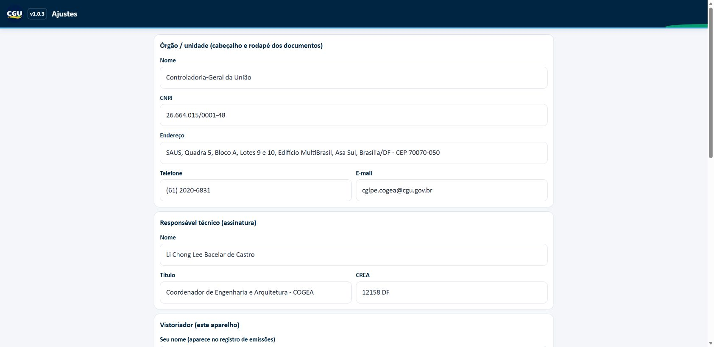
ETAPA 03
Cadastre e encontre um edifício
A aba Edifícios organiza suas vistorias.
- Toque em + Edifício. Informe o nome do edifício; ele é obrigatório. Preencha cliente ou contratante, endereço, contrato e ART/RRT quando aplicáveis.
- Toque em Salvar. A aplicação abre o edifício cadastrado. Para voltar à lista, toque em Edifícios na navegação inferior.
- Use Buscar edifício ou cliente para localizar um cadastro. Toque no cartão do edifício para abrir seus detalhes.
- Quando houver uma vistoria em rascunho, o cartão Continuar vistoria permite retomar o preenchimento mais recente.
Atenção ao uso
As telas deste manual usam dados fictícios e uma imagem demonstrativa. Nenhum exemplo constitui uma vistoria real.
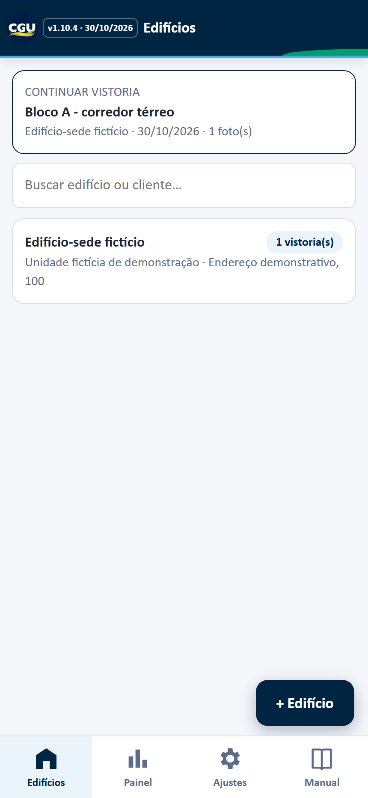
ETAPA 04
Crie uma vistoria
Cada edifício pode ter várias vistorias e locais visitados.
- Abra o edifício e confira os dados do cadastro. Use Editar edifício para corrigir a identificação.
- Toque em + Nova vistoria. Uma nova ficha em rascunho é criada e a aba Dados é aberta.
- Use um nome claro para o local visitado, como Bloco A - corredor térreo. Esse nome identifica a vistoria na lista e nos relatórios.
- Depois de preencher, abra novamente o edifício para consultar suas vistorias. O cartão mostra a situação, a data e a quantidade de fotos.
- Exportar backup do edifício gera um arquivo apenas com os registros dele. Excluir edifício remove suas vistorias, fotos e ações declaradas locais. Emissões, snapshots e arquivos emitidos associados podem permanecer retidos enquanto a política institucional de retenção não for definida.
Atenção ao uso
Antes de excluir um edifício ou uma vistoria, guarde um backup e confira se o arquivo foi salvo.
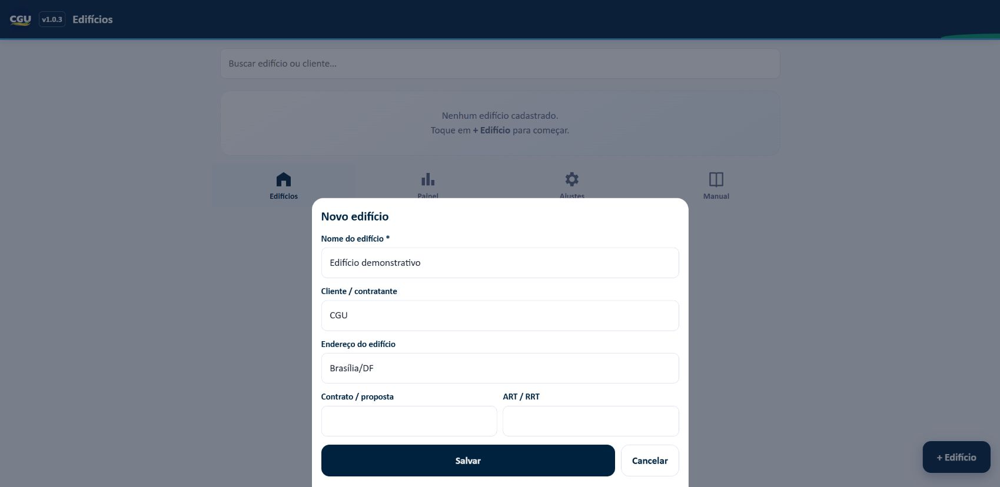
ETAPA 05
Preencha os dados da visita
Registre o contexto da inspeção.
- Preencha Local visitado, tipo de vistoria, data, hora e participantes. Confira a data e o relógio do aparelho.
- Role para informar clima, objetivo, metodologia, documentos consultados e descrição do local. Revise a metodologia sugerida para refletir o trabalho realizado.
- A criação da vistoria não consulta o GPS. Toque em Usar minha localização para solicitar o GPS. Aguarde o resultado e confira as coordenadas e a precisão, quando informada.
- Os campos dessa ficha são salvos automaticamente. Para mudar de etapa, use as abas no topo; deslize a faixa horizontal para encontrar Conclusão e Emitir.
Atenção ao uso
O GPS pode ficar indisponível em ambientes internos ou se a permissão estiver bloqueada. Informe o local de forma clara mesmo sem coordenadas.
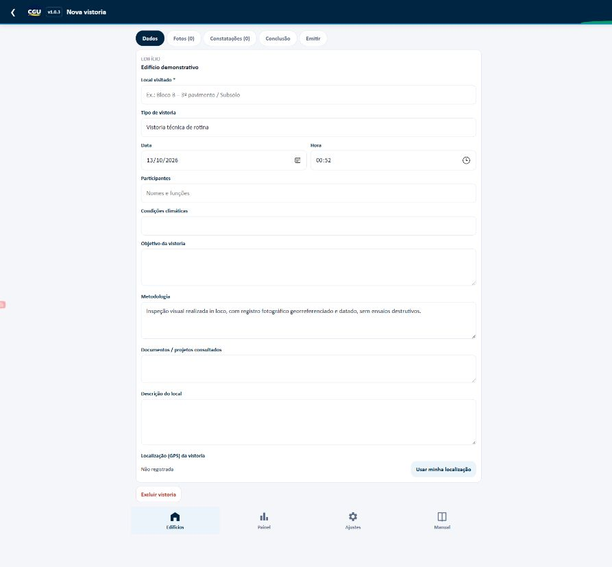
ETAPA 06
Registre as fotos
Use a aba Fotos para produzir as evidências.
- Toque em Tirar foto para usar a câmera. O aplicativo tenta registrar data, hora e GPS; as coordenadas dependem da permissão e da disponibilidade de localização.
- Toque em Da galeria para importar uma ou várias imagens. A data usada é a data do arquivo informada pelo aparelho, que pode ser diferente da data da captura original. Essas fotos não recebem GPS.
- Após fotografar, preencha a descrição da imagem e toque em Salvar. Para imagens da galeria, toque na miniatura para abrir a descrição.
- Quando o carimbo está ativado em Ajustes, data, hora, local e informação de localização são gravados na própria imagem. A configuração vale para novas importações e capturas.
Atenção ao uso
Verifique enquadramento, nitidez e legenda. As imagens podem ser reduzidas conforme o tamanho máximo escolhido em Ajustes.
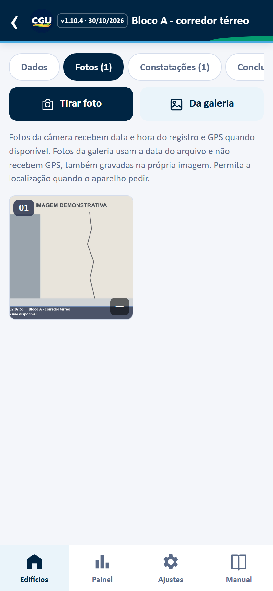
ETAPA 07
Descreva cada imagem
A legenda explica o que a foto comprova.
- Toque na miniatura da foto. Confira a data, a hora e a informação de localização que aparecem abaixo da imagem.
- Escreva uma descrição objetiva: o elemento, o local e a condição observada. Evite descrições genéricas como foto do edifício.
- Toque em Salvar para guardar a legenda. Na captura pela câmera, Salvar e nova foto permite continuar o registro.
- Toque em Recortar para caber na meia folha para enquadrar a foto no tamanho usado nos relatórios, em que as fotos saem em dupla (duas por página). O quadro tem sempre o formato deitado, mesmo para fotos tiradas em pé: arraste-o para escolher o trecho e use o Zoom para ampliar a área. Escolha entre Meia folha (Memorial fotográfico), Lado a lado (Relatório consolidado) ou Personalizado; no personalizado, arraste e redimensione o quadro antes de aplicar. Use Diminuir foto para caber inteira quando quiser preservar toda a imagem. Se precisar, Desfazer recorte ou redução restaura a foto, o carimbo e as marcações anteriores; a confirmação informa se há anotações novas que seriam substituídas.
- Use Marcar foto para acrescentar setas, formas ou números. Excluir foto pede confirmação e remove os vínculos dessa foto com as constatações.
Atenção ao uso
As legendas e as notas de pontos numerados acompanham as imagens nos relatórios.
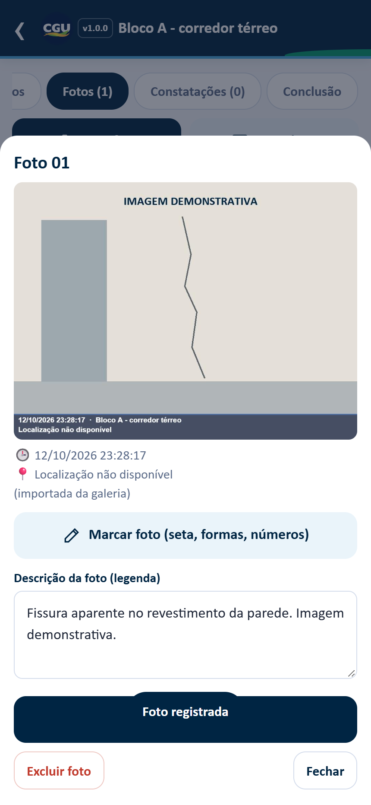
ETAPA 08
Marque pontos de interesse
Destaque a evidência diretamente na foto.
- Abra a foto e toque em Marcar foto. Escolha Seta, Retângulo, Círculo ou Número.
- Para setas e formas, arraste sobre a imagem. Para Número, toque no ponto desejado. Escolha uma das cores disponíveis na barra inferior.
- Desfazer retira a última marca. Limpar remove as marcações da edição. Cancelar fecha o editor sem salvar as mudanças daquela edição.
- Toque em Concluir para salvar a imagem marcada. De volta à foto, descreva cada número no campo de legenda correspondente e toque em Salvar.
Atenção ao uso
A versão original é conservada pelo editor para permitir a revisão das marcações. Evite cobrir a manifestação que deseja demonstrar.
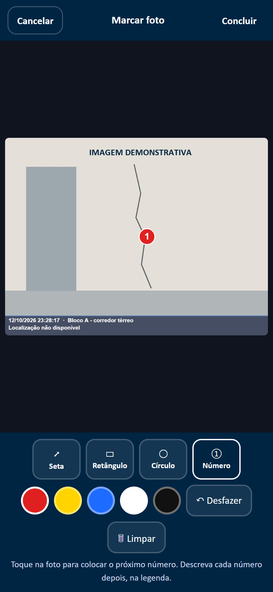
ETAPA 09
Registre as constatações
Organize os achados com suas evidências.
- Abra Constatações e toque em + Nova constatação. Escolha o Tipo de constatação na lista suspensa (manutenção predial, agrupada por sistema); o título é preenchido automaticamente e pode ser ajustado. O título é obrigatório.
- Escolha o Ambiente na lista suspensa (áreas comuns de edificações institucionais) e use Local / elemento para o detalhe, como Pilar P12 – 2º pav.
- Selecione a gravidade: Informativa, Baixa, Média, Alta ou Crítica. Preencha descrição e recomendação conforme a avaliação técnica.
- Em Fotos relacionadas, toque nas miniaturas que comprovam o achado. As fotos selecionadas recebem um contorno de destaque.
- Toque em Salvar. Para revisar, toque no cartão da constatação. Corrija os campos e salve novamente.
- Depois de emitir um relatório que contenha a constatação, use Ações declaradas para informar função responsável, prazo, estado e observação curta. A declaração é local e não verificada; emitir um laudo não conclui a ação.
Atenção ao uso
A classificação de gravidade é escolhida pelo usuário. O aplicativo não calcula risco nem substitui a avaliação técnica.
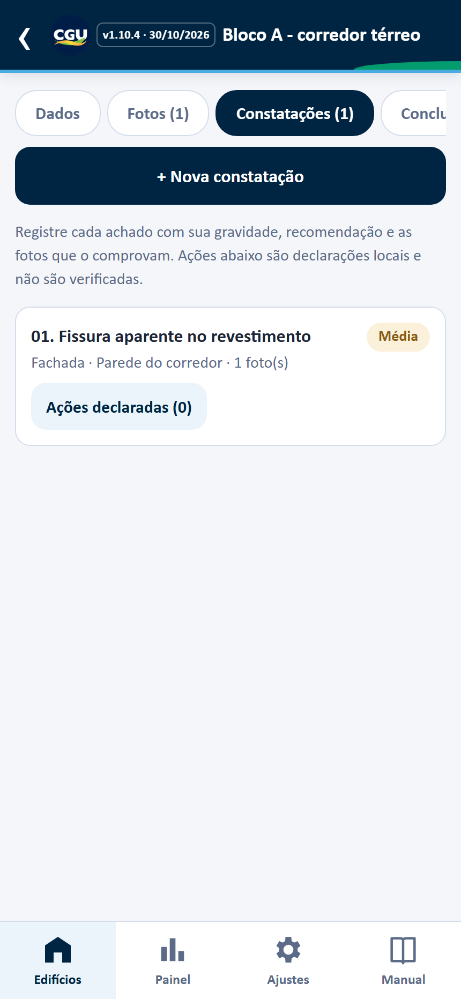
ETAPA 10
Conclua o registro
Consolide o resultado da visita.
- Abra a aba Conclusão. Escreva o parecer com base no objetivo da visita, no que foi observado e nas limitações da inspeção.
- Em Recomendações, escreva uma ação por linha. Deixe claro o que deve ser verificado ou encaminhado.
- Saia do campo para concluir o salvamento automático. Revise dados, legendas, constatações e recomendações antes de abrir Emitir.
Atenção ao uso
Os documentos gerados refletem o conteúdo preenchido pelo usuário. A aplicação não assina digitalmente nem valida o parecer.
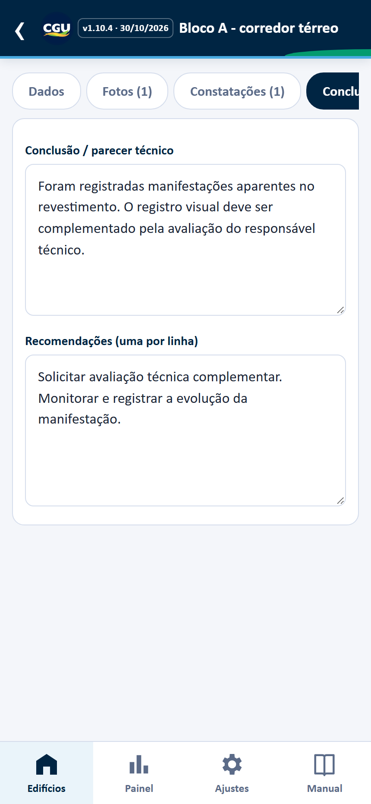
ETAPA 11
Emita Word ou PDF
Escolha o documento e confira o resultado.
- Abra Emitir e confira os avisos de preenchimento. Os avisos orientam a revisão; não impedem a geração do arquivo.
- Escolha Memorial de Vistoria Técnica (VT), Memorial Fotográfico (MF) ou Relatório Consolidado (RC). O consolidado reúne vistoria e fotos em um documento.
- Sem marcar Emissão oficial, o arquivo sai como rascunho, sem registro no Painel. Ao marcar, recebe número sequencial e a emissão é registrada.
- Se o conteúdo mudou depois da emissão, marque Emitir como nova revisão quando essa opção aparecer. A nova revisão mantém o número da vistoria.
- Toque em Word (.docx) ou PDF, aguarde Arquivo pronto e use Baixar. Compartilhar depende do suporte do aparelho. Abra e confira o documento antes de encaminhar.
Atenção ao uso
Emissão oficial é um controle interno do aplicativo; não concede aprovação institucional. A numeração é local por aparelho e pode coincidir entre celulares.
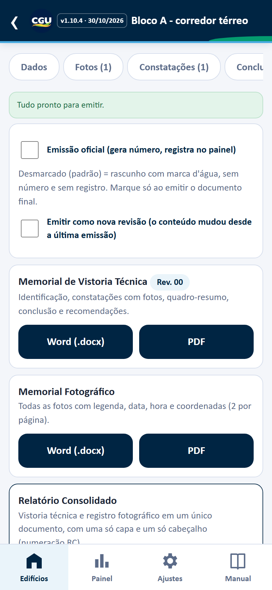
Comparar emissões
No histórico de emissões, escolha Comparar com outra emissão. A comparação só prossegue quando os dois snapshots da mesma vistoria continuam verificados; constatações são comparadas por ID e evidências por SHA-256. A leitura segue a direção da emissão de referência para a emissão escolhida; mudanças nos vínculos locais fotoIds não mudam a classificação da constatação. Resultado indisponível não apresenta comparação parcial. Os detalhes são declarações locais restritas. Verificado significa consistência local, não autoria, e não confere os bytes do PDF/DOCX.
ETAPA 12
Acompanhe pelo Painel
Consulte indicadores locais e emissões deste aparelho.
- Abra Painel. Se houver PIN configurado, informe-o para entrar.
- Confira os registros e as linhas de emissão locais. O bloco analítico usa snapshots verificáveis e não muda com os filtros da lista.
- Escolha 12 meses, 24 meses ou todo o histórico. O período e as vistorias sem data válida são informados na tela; os códigos de sistemas e ambientes são uma taxonomia interna, não institucional.
- Revise as lacunas cadastrais e os pares candidatos a duplicata. São alertas locais: não mesclam nem alteram registros.
- As exportações analíticas exigem confirmação. O agregado omite IDs; o manifesto só inclui IDs estáveis se você marcar a opção. Trate os arquivos como classe restrita e não compartilhe sem autorização.
- Filtre por edifício, situação, período e local. Use Agrupar por edifício ou Agrupar por local visitado para reorganizar a consulta.
- Toque numa linha de vistoria para abrir o registro. Exportar CSV baixa o histórico de emissões filtrado para consulta em planilha.
Atenção ao uso
Uma emissão em Word e outra em PDF geram duas linhas de emissão, mas os indicadores contam cada vistoria uma vez. Os agregados usam dados deste aparelho; snapshot verificado indica consistência local e não valida autoria nem os bytes do PDF/DOCX. A densidade é uma razão por vistoria, não porcentagem. O painel não calcula risco nem representa uma carteira consolidada da CGU. As dimensões aparecem como barras com contagens e rótulos; avisos destacam snapshots ausentes/divergentes e edições posteriores. Os indicadores refletem o snapshot congelado; rascunhos não entram. O PIN é barreira de interface, não acesso institucional. O indicador conta vínculos de recorrência declarados pela pessoa, não relações verificadas; a seleção oferece achados anteriores verificados do mesmo edifício, e o aplicativo não infere pelo texto.
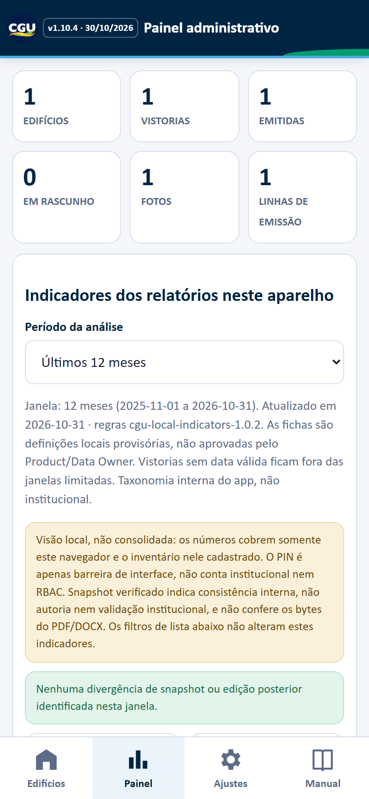
Itens para acompanhamento
Na área de ações locais, abra a lista para filtrar apontamentos vencidos, ações abertas há mais de 30 dias e constatações Alta/Crítica sem ação declarada. O botão abre a leitura do snapshot congelado; nela, você pode seguir ao registro atual, se a constatação ainda existir. Ao abrir o registro atual, a aba Constatações fica selecionada. A lista mostra título, edifício e texto técnico restritos: não projete em tela pública ou TV, não compartilhe sem autorização; o PIN é só barreira local, não RBAC. Os itens vêm de snapshots verificados do período e são declarações locais não verificadas; uma constatação pode aparecer por mais de um motivo. Não é painel institucional nem indicador de risco.
ETAPA 13
Guarde e reúna os backups
Faça backup ao terminar cada jornada.
- Abra Ajustes e role até Backup e consolidação. Toque em Exportar tudo (.json) e confirme que o arquivo foi baixado.
- Guarde o JSON num local autorizado pela equipe, fora do aparelho. Ele contém edifícios, vistorias, constatações, emissões, fotos, GPS, snapshots, arquivos PDF/DOCX emitidos e ações declaradas (função responsável e observação); os dados profissionais cadastrados, como CREA, também podem estar nos registros. O PIN e as demais configurações não são incluídos. Dados do perfil usados nos relatórios (empresa, responsável técnico/CREA e usuário) são incluídos nos snapshots das emissões. O JSON não é criptografado.
- Para restaurar ou reunir registros, toque em Importar backup e escolha o arquivo. A aplicação valida o conteúdo e executa a importação em uma operação. Registros idênticos são reconhecidos como duplicatas; conflitos preservam a cópia local e são listados ao final. Snapshots e arquivos emitidos presentes no backup são verificados quando importados.
- Se uma vistoria foi excluída, suas emissões, snapshots e arquivos retidos ficam fora do backup restaurável; o aplicativo avisa quando isso ocorre. Eles permanecem somente no navegador e serão perdidos se os dados locais forem apagados. A política institucional de retenção ainda precisa ser definida.
- Backups no formato de registros versão 1 são aceitos. Faça um backup antes de atualizar: o IndexedDB passa para o esquema v3; os códigos v1.0.6 e v1.2.0 não conseguem abrir esse banco atualizado (VersionError). Se voltar ao 1.0.6 em uma instalação separada, snapshots e arquivos emitidos do backup 1.1.0 não serão restaurados por esse aplicativo. O código v1.2.0 também não aceita a lista opcional acoes quando houver ações no backup v1.3.0. A versão 1.3.0 rejeita o campo opcional recorrenciaDeId quando presente no backup; faça backup antes de atualizar e evite downgrade depois de criar novos vínculos. A identidade visual da CGU e o perfil local de Ajustes continuam aplicados.
- Ao reunir vários aparelhos, revise números repetidos. Para reduzir conflitos de numeração, concentre a emissão final num aparelho definido pela equipe.
Atenção ao uso
O backup JSON não é criptografado. Limpar dados do navegador, trocar de endereço ou perder o aparelho pode impedir o acesso aos registros locais.
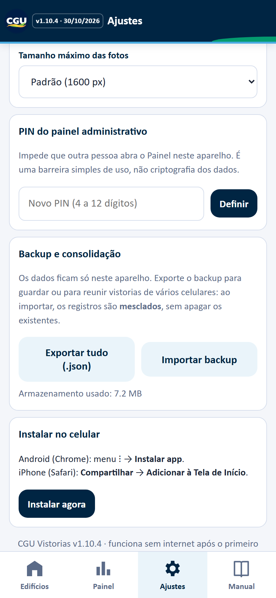
ETAPA 14
Dúvidas frequentes
Use estas verificações quando precisar.
- Não encontro minhas vistorias: confirme aparelho, navegador e endereço usados no cadastro. Se mudou de aparelho ou navegador, importe um backup.
- Câmera ou GPS não abrem: confirme que o endereço começa com HTTPS, revise as permissões do navegador e tente novamente. Fotos podem ser salvas sem GPS.
- O aplicativo não abre sem internet: faça o primeiro acesso conectado, aguarde o carregamento, abra o Manual e teste novamente. A instalação do cache depende de todos os arquivos estarem disponíveis.
- Não consigo compartilhar: use Baixar e encaminhe o arquivo pelo aplicativo autorizado pela equipe.
- Arquivo de backup inválido: selecione um JSON exportado pelo CGU Vistorias ou compatível com seu formato de registros. Arquivos Word, PDF e CSV não restauram os registros.
- Como conferir a versão: o número aparece imediatamente após o selo CGU no cabeçalho. Este manual corresponde à versão 1.10.4.
Atenção ao uso
Não há sincronização em nuvem, controle institucional de usuários nem assinatura digital nesta versão. Combine com a equipe a rotina de backup e emissão.